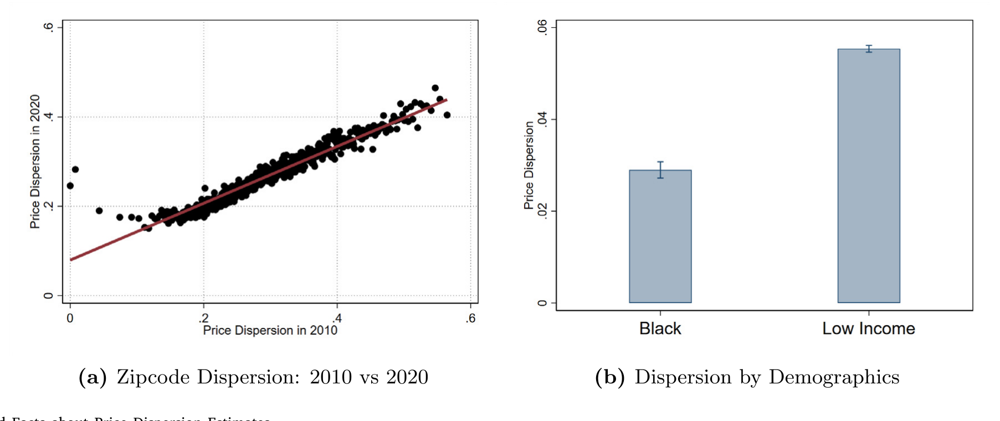
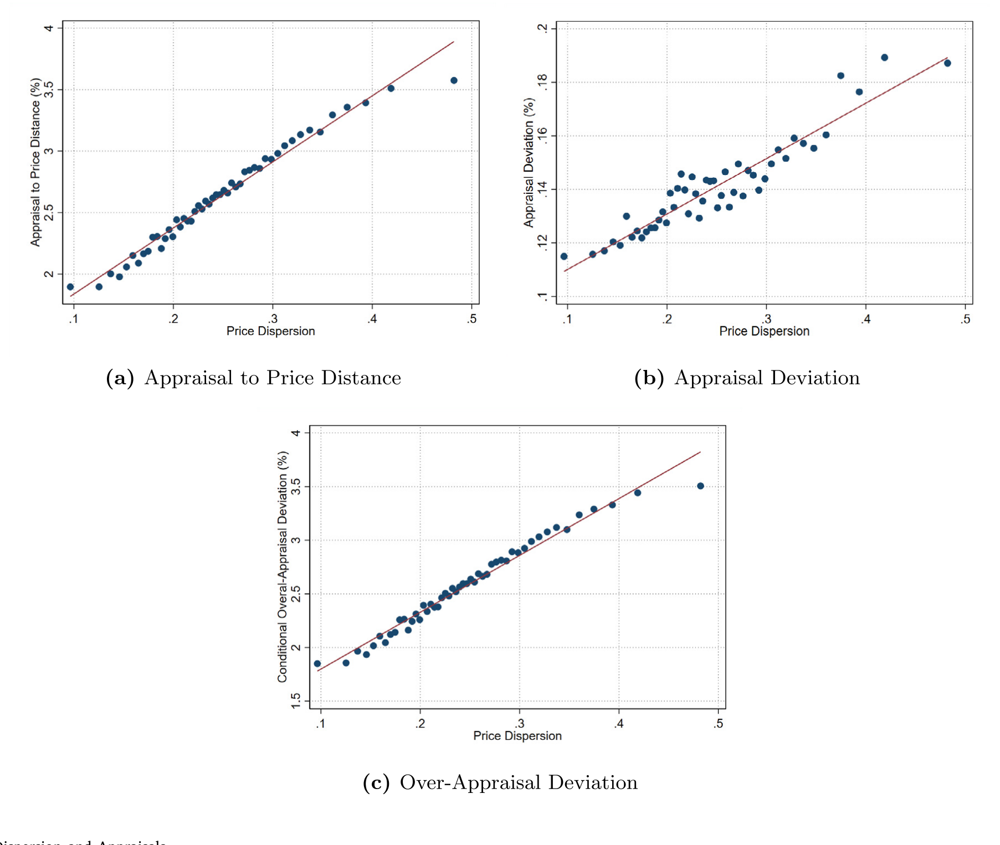
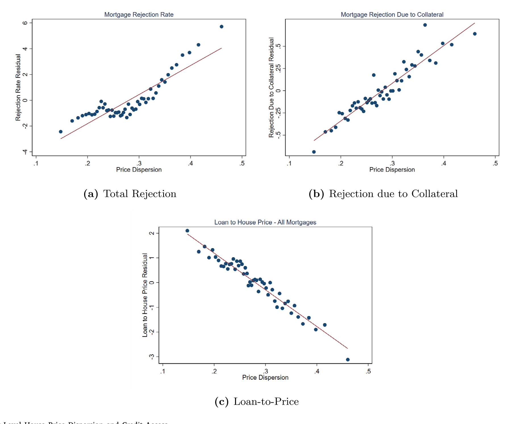
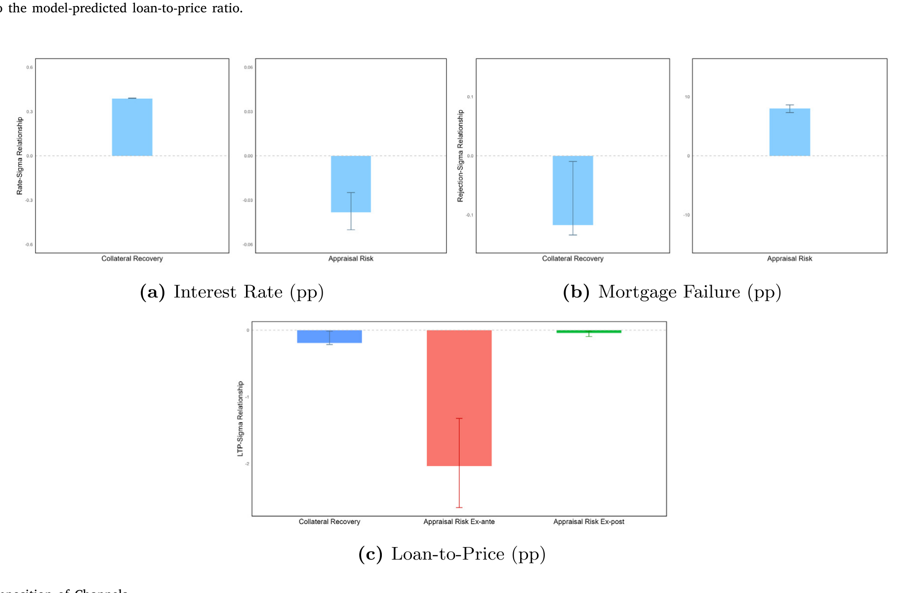
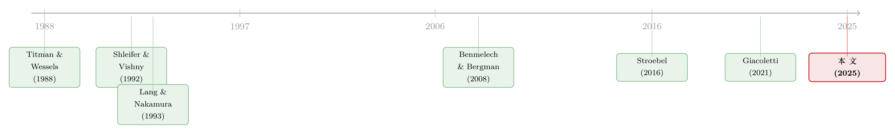

房子越「难定价」，越借不到钱——抵押品不确定性与按揭里那道看不见的监管楔子
本文读的是 Jiang & Zhang (2025, Journal of Financial Economics)：价值越难估准的房子，越借不到按揭——这些房子的贷款更容易被拒、利率更高、贷款价格比 (loan-to-price, LTP) 更低。背后有两条渠道：一条是教科书里的「抵押品回收」渠道（不确定性压低违约回收率，即便在无摩擦市场也成立），另一条是作者认为全新的「评估」渠道——更嘈杂的评估让 LTV 监管约束更容易绑住这些房子。作者用一个结构模型把两条渠道的份额拆开，并据此推演「人工评估转向计算机评估」会带来什么。反转在于：天真地去掉评估师的乐观偏差，反而会让按揭失败率上升 10.540%–13.561%。
1 引言：两套同价的房子，为什么命不同？
先讲一个再普通不过的场景。某个城郊小区，一排排户型雷同、建于同一年代的标准化住宅；隔壁老城区，一栋上了年纪、改造过、户型独特的老房子。假设此刻它们的挂牌价一模一样，买家的收入、FICO 分数也几乎一样。按常理，银行对这两笔按揭的态度应该没什么差别。
但现实里，它们的命运可能截然不同。那栋老房子的贷款更可能被拒，即便批了，利率也更高、能贷到的成数更低。
为什么？答案藏在一个平时不太被定价的维度里——这套房子有多「难定价」。标准化住宅有一大堆几乎相同的成交可比，价格好估；那栋独特的老房子没有几个像样的可比，估值天然嘈杂。Jiang 和 Zhang 这篇 2025 年发表在 Journal of Financial Economics 上的论文，正是要把这个「难定价」的维度——他们称之为 价格离散度 (price dispersion)，或更一般地说 价值不确定性 (collateral value uncertainty)——请到台前，看它如何系统性地决定一个家庭能不能、以什么条件借到买房的钱。
这件事远不止是「冷知识」。美国的首次购房者平均要借走房价的 80% 以上，按揭几乎是普通家庭拥有住房的唯一通道。如果「难定价」会折损信贷，而难定价的房子又恰好集中在低收入、少数族裔聚居的地区——那么这条看不见的链条，正悄悄卡住了那些最依赖信贷买房的人。
2 先把「难定价」量出来
要研究价值不确定性，第一步得先有一把尺子。作者的做法很干净，分两段走。
首先，跑一个 特征价格 (hedonic) 回归，用房子的可观测特征去解释成交价：
$$p_{it} = \eta_{kt} + f_k(x_i, t) + \epsilon_{it} \tag{1}$$
这里 \(i\) 是房产，\(k\) 是县（county），\(t\) 是月份；\(p_{it}\) 是对数成交价，\(x_i\) 是房屋特征，\(f_k(x_i,t)\) 是一个随时间变化的广义可加模型，\(\eta_{kt}\) 是县×月固定效应。残差 \(\epsilon_{it}\) 就是「用特征预测价格时犯的错」。
接着，关键的一步来了：他们不直接用残差，而是把残差的平方再回归一次到特征上：
$$\hat\epsilon_{it}^2 = g_k(x_i, t) + \xi_{it} \tag{2}$$
然后取拟合值的平方根，作为这套房子的特质价格离散度：
$$\hat\sigma_{it} \equiv \sqrt{\hat g_k(x_i, t)} \tag{3}$$
为什么要绕这一道、用 \(\hat\sigma_{it}\) 而不是直接用残差 \(\hat\epsilon_{it}^2\)？作者在脚注里讲得很清楚：单次的 \(\hat\epsilon_{it}^2\) 只是真实离散度 \(\sigma_{it}^2\) 的一个嘈杂实现，而模型里真正进入 LTV 计算、真正决定信贷的，是它的期望——也就是「这一类房子平均有多难估」。第二段回归正是把这个期望从噪声里萃取出来。这是一个很值得记住的测量细节：你想要的往往不是某一次的误差，而是误差的可预测部分。
作者只用了特质（idiosyncratic）那一半。引用 Piazzesi & Schneider (2016) 的估计，特质波动大约占房价总波动的一半；而由于全文几乎都在「区域×年份」内部做比较，同一片市场里的房子系统性风险暴露相近，真正能区分它们的，恰恰就是这部分特质离散度。
量出来之后，几个 特征事实 (stylized facts) 很说明问题。第一，价格离散度在 zipcode 层面极其持久——拿 2020 年的离散度去对 2010 年的离散度，几乎落在一条直线上。这说明它不是被某年的市场冷热推动的，而是由当地房屋存量的持久特征决定的：老、不标准、户型怪、成交稀薄的房子，就是难估。

Figure 1: Stylized Facts about Price Dispersion Estimates
第二，也是承上启下的一步：高离散度的房子，评估值也更嘈杂。它们更容易被「低估」（under-appraise，即评估值低于成交价），而且一旦低估，幅度也更大。作者算了一下，高离散度地区评估值与成交价的百分比绝对偏差，要比低离散度地区大约高出 1.5 个百分点。这个事实是后面整篇论文的枢纽——记住它。

Figure 2: Price Dispersion and Appraisals
3 事实：难定价的房子，全方位地借不到钱
有了尺子，接下来是核心的实证事实。作者把 Corelogic 的房产交易与按揭数据、HMDA 的按揭申请（含拒贷及拒贷原因）拼起来，发现价值不确定性在好几条边际上都压着信贷：
- 拒贷率——效应最大。价格离散度每升高
1个标准差，与抵押品相关的拒贷会上升约25%，整体拒贷率上升约10%。 - 利率——统计显著但经济上不大：
1个标准差的离散度上升，对应大约0.9bps的利率上行。 - 贷款价格比 (LTP)——同样
1个标准差，对应大约20bps更低的 LTP。
注意这个不对称的结构：利率和成数动得不多，但「能不能批」这件事动得很大。一套难定价的房子，最大的风险不是「贷贵一点」，而是「干脆批不下来」。这个不对称在后面会变成区分两条渠道的关键指纹。
接着，一个自然的问题是： 这真的是「房子」的问题，还是「人」的问题？高离散度地区的买家，本来收入更低、FICO 更差——会不会银行只是在对人定价，而不是对房子定价？
这是整篇论文识别上最要紧的一关。作者的办法是给价格离散度构造一个 工具变量 (instrumental variable, IV)：用一套房子相对于当地房屋存量有多「异类」来做工具。直觉很漂亮——当一个 zipcode 的房子普遍很不标准时，任何一套房子的市场都会更稀薄，价格离散度也就更高；但「这套房子相对当地有多异类」本身，并不直接告诉你买家的信用好坏。两个验证让这个工具站得住脚：其一，工具与买家事前的信用资质不相关；其二，被高「工具化离散度」覆盖的买家，事后也并没有更容易违约。
这一步把「是房子差，还是人差」干净地切向了前者：结论是这些房子确实是更差的抵押品，而不是住在里面的人风险更高。这正是后续整套结构分析的合法性前提。

Figure 4: County Level House Price Dispersion and Credit Access
4 两条渠道：一条「天经地义」，一条「监管造的」
事实摆好了，但真正关键的一步在于：为什么 难定价会折损信贷？作者提出两条经济机制，它们方向一致（都让信贷变少），但来历完全不同。
第一条，抵押品回收 (collateral recovery) 渠道——经典且基本有效率。 债权的价值对抵押品的处置价格是凹的：抵押品卖得再高，债主也拿不走超过欠款的那部分上行；可一旦卖得低于欠款，损失却要债主自己扛。于是抵押品价值的不确定性越大，债权的期望回收就越低。把这层逻辑写成债主在违约时的回收：
$$\text{Recovery}_i = \mathbb{E}\big[\min(D_i,\, V_i)\big]$$
其中 \(D_i\) 是未偿债务，\(V_i\) 是抵押品的处置价值。\(\min(D_i,\cdot)\) 是凹函数，所以对 \(V_i\) 做一个 保均值展宽 (mean-preserving spread)——也就是提高离散度 \(\sigma\)——会降低 \(\mathbb{E}[\min(D_i,V_i)]\)。由 Jensen 不等式，回收变低，理性的债主自然对这类房子开出更差的菜单（更高利率、更少信贷）。这条渠道即便在无摩擦市场里也照样成立，它是「公平定价」的产物，本身没有效率损失。
第二条，评估 (appraisal) 渠道——作者认为是本文的新贡献，而且它是监管造出来的。 监管对绝大多数美国按揭施加 贷款价值比 (loan-to-value, LTV) 限制，把可借金额限制在房子估值的某个比例以内。而计入 LTV 的「抵押品价值」，按规定取成交价与评估值的较小者。把这条规则连同 LTV 上限写出来，就是整篇论文的核心方程：
魔鬼就在那个 \(\min(p_i, a_i)\) 里。当评估值偏高（\(a_i \ge p_i\)），约束以成交价 \(p_i\) 为准，一切照旧；可一旦欠评估（\(a_i < p_i\)），抵押品价值被强行下调到 \(a_i\)，LTV 约束骤然收紧——买家要么被迫掏出更多首付，要么干脆借不到、交易告吹。而我们在第 2 节已经知道：高离散度的房子评估更嘈杂、更容易欠评估。于是同一条 LTV 规则，对难定价的房子绑得更紧。
作者用一个汇总量来度量这种「向下的压力」，即 评估偏离 (appraisal deviation)：
$$\frac{|a_i - p_i|}{p_i}\,\mathbf{1}(a_i < p_i)$$
它是「欠评估幅度」乘以「是否欠评估」的示性函数，把欠评估的概率与深度合在一起。数据显示，这个偏离在高离散度地区明显更大。
这两条渠道的分野，是整篇论文的灵魂：第一条是市场公平定价的结果，该有；第二条是监管执行方式的副产品，没有理由一定有效率。一套房子被少贷，可能不是因为它真的更不安全，而仅仅是因为它「更难被一把尺子量准」。这正是金融监管研究里反复出现的母题——为解决某个具体问题设计的监管，常常以副作用的形式制造出新的问题。
5 结构模型：把两条渠道的份额拆开
方向一样的两条力，怎么分得开？这就是作者要建结构模型的原因。
模型的舞台是这样搭的：
第一步，竞争性的债主给买家一份 利率—LTP 的菜单，使得在外生的违约风险和房屋止赎后的期望回收下，债主恰好盈亏平衡。这一步内嵌的，正是上面那条回收渠道——离散度越高，回收越低，菜单越差。
第二步，买家从菜单上挑一个目标贷款规模。她面对的权衡很真实：贷得越多，消费平滑越好；但贷得越多，越经不起一次欠评估的打击。
第三步，房子接受评估。 作者把评估建模为一个嘈杂、且向上有偏的价格信号——这与现实中评估值的分布高度吻合（评估常常正好等于成交价，欠评估相对罕见，既因为成交本身有选择性，也因为人工评估师有把价格往成交价上靠的激励）。
第四步，按规则结算： 若评估值够高，按计划放款；若评估值低到会违反 LTV 约束，买家要么付出代价加首付，要么付一笔固定成本毁约、再去找别的房子——后者作者就解释为一次按揭失败/拒贷。
把这套机制校准到数据上——匹配「利率菜单、评估分布、拒贷率、贷款规模如何随价格离散度变化」这些矩——作者就能问：观察到的每一份信贷紧缩，有多少来自回收渠道，多少来自评估渠道？
答案干净得出人意料，而且回应了第 3 节那个不对称的指纹：
回收渠道主要驱动利率的变化；评估风险才是按揭失败上升、LTP 下降的主因。
换句话说，难定价的房子「贷得贵一点」，主要是市场在公平地定价风险；但它们「干脆批不下来、只能少贷」，则在很大程度上是那条监管造出来的评估渠道在作祟。模型对数据的拟合相当不错，渠道分解也清晰。

Figure 8: Decomposition of Channels
校准模型还给出了福利的量级。为了抵消更高的利率和欠评估风险，价格离散度最高十分位的县里的购房者，需要为同一套房子面对低 1.679% 的价格，才能达到与最低十分位的县里购房者相同的期望效用。这不是天文数字，但也绝非可以忽略。
6 反转：去掉评估师的「乐观偏差」，反而更糟
评估渠道既然是监管造的，那监管环境一变，效应就会变。眼下最现实的变化，就是 自动化评估 (automated appraisals) 的兴起——2021 年 FHFA 宣布银行与贷款机构可以用评估软件替代人工评估。作者用模型做了两个反事实。
第一个，听起来最「进步」的设想： 假设软件只是去掉了人工评估师向上偏的习惯，让评估值变成围绕成交价对称分布。结果呢？欠评估风险反而大幅上升——因为人工评估师的乐观偏差，原本恰恰在「托住」评估值、压低欠评估的概率。去掉它，按揭失败率会上升大约 10.540% 到 13.561%；要让消费者达到原来的效用，房价得下降 5.347% 到 6.262%。
这是全文最反直觉、也最漂亮的一击：一个看起来在「纠偏、求真」的技术进步，若不理解它嵌在 \(\min(p,a)\) 这条监管规则里的角色，落地后可能让最依赖信贷的人更借不到钱。
第二个，设计得当的设想： 假设自动化评估维持现状的欠评估率，但噪声只有人工的一半。这时欠评估压力会有所缓解：按揭失败率最多下降约 1.600%，消费者愿意为同一套房子多付最多 0.694%。
同一项技术，可以是良药也可以是毒药——区别只在于它如何被实现。这正是「评估渠道是监管产物、没有理由天然有效率」这一论断最有力的注脚。
7 文献脉络
这条研究的根，扎在「抵押品质量如何决定债务能力」这棵老树上。早期 Titman & Wessels (1988) 把抵押品写进资本结构选择，Shleifer & Vishny (1992) 则用清算价值与债务能力的市场均衡，奠定了「流动性差的资产是更差的抵押品」这一基本直觉。沿着这条线，Benmelech & Bergman (2008, 2009) 用航空业、铁路债等实证场景，把「清算价值—债务契约」的关系一步步钉实。
接着，一支专门测量房价离散度的文献长了出来——从 Case & Shiller (1989) 开始，到 Giacoletti (2021)、Sagi (2021)、Buchak et al. (2020) 等，逐渐确立了「房子在稀薄市场里成交、价格天然分散」这件事，并给出了在单套房子层面估计离散度的工具。本文测量价值不确定性的方法，正是站在 Buchak et al. (2020) 的肩膀上。

然后，还有两篇更老、最贴近本文的论文：Lang & Nakamura (1993) 提出，当成交稀薄时债主对房价更不确定，于是要求更高首付；Blackburn & Vermilyea (2007) 用「市场规模」去实证检验这一关系。但作者诚实地指出：Lang & Nakamura (1993) 虽以「评估噪声」为名，其力量其实更接近回收渠道；本文真正新的，是把那条由 LTV 监管 + 评估规则共同造出来的、独立的评估渠道识别出来，并用结构模型把它与回收渠道的份额量化地拆开。
本文同时也落在「按揭信贷摩擦」这条更宽的脉络上（Mian & Sufi, 2011；DeFusco et al., 2020 关于家庭杠杆监管等），但它的位置很独特：据作者所知，这是任何场景下第一篇论证「基于评估的监管约束」在抵押品—信贷关系中扮演角色的论文。
值得一提的是，本文的合作者之一 Anthony Lee Zhang 也参与了把「数据/信息如何重塑信贷与福利」做量化的工作（关于这一支，可参见《数据让定价更准，谁的钱包先变薄？》）；而本文「价值不确定性的分布后果集中压在低收入、少数族裔家庭身上」这一点，又与《买不起的，其实不是房子，而是机会》里首付约束如何把弱势家庭锁在「低机会」之地的逻辑，遥相呼应。LTV 约束何时「绑住」一个家庭，也正是《把爸妈的收入也算进按揭》关心的同一道门。
8 评论与延伸（Q&A + 研究方向）
(a) 几个可能的疑问
Q：这里的「价格离散度」和我们平时说的房价波动率是一回事吗？
不是。作者刻意只取特质（idiosyncratic）那一半——即「用特征也估不准」的部分，约占总波动的一半（Piazzesi & Schneider, 2016）；而且分析几乎都在「区域×年份」内部比较，系统性的市场冷热被差掉了。它度量的是「这套房子有多难被估准」，不是「这片市场涨跌有多猛」。
Q：高离散度地区借不到钱，会不会其实是因为那里的人本来信用就差？
这是最核心的识别担忧。作者用「一套房子相对当地存量有多异类」做工具变量：它与价格离散度相关，但与买家事前信用资质无关，且被高「工具化离散度」覆盖的买家事后也并不更容易违约。两条加起来，把解释推向「房子是更差的抵押品」，而非「人更差」。
Q：两条渠道既然方向一样，凭什么说能分得开？
靠的是它们在不同结果上留下的不同指纹。结构模型匹配多组矩后发现：回收渠道主要解释利率的变化，评估渠道主要解释按揭失败与 LTP 的下降。是这种「谁驱动谁」的差异，而非单一回归，让两条力可被分离。
Q：评估值「向上有偏」听起来是坏事，为什么去掉它反而更糟？
因为那点乐观偏差恰恰在「托住」评估值、压低欠评估概率。把它去掉、让评估对称分布，欠评估会变多，\(\min(p,a)\) 里的 \(a\) 更频繁地拖低抵押品价值，LTV 约束绑得更紧——模型里按揭失败率因此上升
10.540%–13.561%。
Q：凭什么说评估渠道「低效」，回收渠道就「有效率」？
回收渠道是债主对真实回收风险的公平定价，在无摩擦市场也成立，是「该有」的。评估渠道则纯粹是「LTV 必须按一把嘈杂的尺子去执行」的副产品——它对难估的资产绑得更紧，但没有任何理由说这种差别对待是有效率的，它的强弱甚至取决于评估监管怎么写。
Q：这对穷人和少数族裔意味着什么？
价值不确定性恰恰在低收入、少数族裔聚居的地区最高。也就是说，这条链条系统性地折损了最依赖信贷买房的那群人的信贷可得性——这是一个让人不安的分布后果。
(b) 几个可能的研究问题与提案
1. 公司债/杠杆贷款里的「评估渠道」。
【经济故事】本文的机制不限于住房：凡是抵押品「难估」且监管/合约按某个估值施加 LTV 式约束的市场，都可能存在评估渠道。无形资产、专用设备支撑的杠杆贷款尤其如此。【可行性】中。可用 DealScan + 抵押品类型，构造「抵押品可比稀薄度」的工具，难点是公司层面的抵押品估值数据远不如住房透明。
2. 抵押品不确定性与公司债的二级市场流动性。
【经济故事】若抵押品价值越不确定、债的期望回收越凹，那么这种不确定性是否会顺着定价传导到债券二级市场的流动性与交易商融资（回购折扣）上？这把「抵押品—信贷」链条延伸到了「抵押品—流动性」。【可行性】中。TRACE + 债券抵押条款 + 回购数据可做，识别上需要一个外生于发行人信用的抵押品不确定性来源。
3. 外资持有人对抵押品不确定性的定价是否不同？ 【经济故事】外资债权人对本地抵押品的回收环境、评估制度更不熟悉，可能对价值不确定性收取更高的「不确定性溢价」，从而在难估抵押品上系统性地少借。【可行性】低到中。需要把持有人国籍与抵押品特征拼起来，跨境抵押品数据是主要障碍，识别也偏弱。
4. CMBS 与商业地产的评估渠道。
【经济故事】商业地产评估比住宅更嘈杂、更主观，而 CMBS 又高度依赖 LTV 类触发条款。本文的评估渠道在这里可能被放大。【可行性】中。Trepp 类数据含评估值与触发条款，可直接照搬本文的「评估偏离」度量去检验。
5. 自动化估值（AVM）落地的事件研究。 【经济故事】2021 年 FHFA 放开自动化评估，提供了一个准实验：本文模型预测其效应取决于「去偏」还是「降噪」，方向甚至可能相反。【可行性】中。可围绕 AVM 采用的地区/机构错位时点，做难定价 vs. 易定价房子的 双重差分 (difference-in-differences, DiD)，把模型的反事实拿到真实数据里检验。
9 我的判断
这篇论文最漂亮的地方，是把一个被无数人视作「技术细节」的东西——评估值如何进入 LTV 计算——拎出来，证明它是一条独立、且可能低效的经济渠道，并用结构模型把它和教科书渠道的份额量化地切开。「同方向、不同来历」的两条力能被干净分离，靠的是它们在利率 vs. 拒贷/LTP 上留下的不同指纹，这是方法上很扎实的一手。自动化评估那个反转——去掉偏差反而更糟——更是把「不理解监管嵌套就贸然求真」的代价讲得淋漓尽致。
对识别，我有两点保留。其一，工具变量虽然两道验证都过了，但「一套房子相对当地存量的异类程度」是否真的与买家偏好/资质正交，仍依赖于「住进异类房子的人不系统性地不同」这一不可完全检验的假设——尤其在自选择很强的住房市场。其二，结构模型把违约风险与回收当作外生输入，而现实中难定价本身可能同时改变违约的内生决策；若回收与违约存在反馈，两条渠道的份额估计可能被搅动。
后续我最想看到的，是把这套「评估渠道」搬到信用市场和有抵押品的公司债务里去——商业地产、杠杆贷款、乃至回购市场的折扣率，都是 \(\min(p,a)\) 式约束可能潜伏的地方。如果评估渠道在那里同样成立，那么「难估的资产更难融资」这件事，就不只是住房的故事，而是整个抵押融资体系里一道普遍的、被监管亲手凿出来的楔子。
参考文献
- Benmelech, Efraim, Bergman, Nittai K. (2008). Liquidation values and the credibility of financial contract renegotiation: Evidence from U.S. airlines. Quarterly Journal of Economics 123(4), 1635–1677.
- Benmelech, Efraim, Bergman, Nittai K. (2009). Collateral pricing. Journal of Financial Economics 91(3), 339–360.
- Blackburn, McKinley, Vermilyea, Todd (2007). The role of information externalities and scale economies in home mortgage lending decisions. Journal of Urban Economics 61(1), 71–85.
- Buchak, Greg, Matvos, Gregor, Piskorski, Tomasz, Seru, Amit (2020). iBuyers: Liquidity in real estate markets? Available at SSRN 3616555.
- Case, Karl E., Shiller, Robert J. (1989). The efficiency of the market for single-family homes. American Economic Review 79, 125–137.
- DeFusco, Anthony A., Johnson, Stephanie, Mondragon, John (2020). Regulating household leverage. Review of Economic Studies 87(2), 914–958.
- Giacoletti, Marco (2021). Idiosyncratic risk in housing markets. (Working paper / 见正文引用.)
- Jiang, Erica Xuewei, Zhang, Anthony Lee (2025). Collateral value uncertainty and mortgage credit provision. Journal of Financial Economics 169, 104054.
- Lang, William W., Nakamura, Leonard I. (1993). A model of redlining. Journal of Urban Economics 33(2), 223–234.
- Mian, Atif, Sufi, Amir (2011). House prices, home equity-based borrowing, and the US household leverage crisis. American Economic Review 101(5), 2132–2156.
- Piazzesi, Monika, Schneider, Martin (2016). Housing and macroeconomics. Handbook of Macroeconomics 2, 1547–1640.
- Sagi, Jacob S. (2021). Asset-level risk and return in real estate investments. Review of Financial Studies 34(8), 3647–3694.
- Shleifer, Andrei, Vishny, Robert W. (1992). Liquidation values and debt capacity: A market equilibrium approach. Journal of Finance 47(4), 1343–1366.
- Titman, Sheridan, Wessels, Roberto (1988). The determinants of capital structure choice. Journal of Finance 43(1), 1–19.